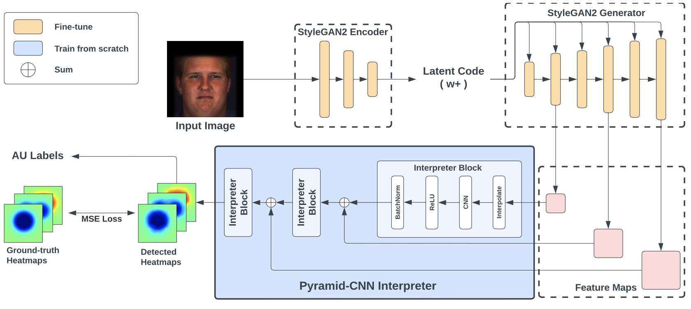

FG-Net: Facial Action Unit Detection with Generalizable Pyramidal Features WACV 2024
Abstract
Automatic detection of facial Action Units (AUs) allows for objective facial expression analysis. Due to the high cost of AU labeling and the limited size of existing bench- marks, previous AU detection methods tend to overfit the dataset, resulting in a significant performance loss when evaluated across corpora. To address this problem, we pro- pose FG-Net for generalizable facial action unit detection. Specifically, FG-Net extracts feature maps from a Style- GAN2 model pre-trained on a large and diverse face im- age dataset. Then, these features are used to detect AUs with a Pyramid CNN Interpreter, making the training ef- ficient and capturing essential local features. The pro- posed FG-Net achieves a strong generalization ability for heatmap-based AU detection thanks to the generalizable and semantic-rich features extracted from the pre-trained generative model. Extensive experiments are conducted to evaluate within- and cross-corpus AU detection with the widely-used DISFA and BP4D datasets. Compared with the state-of-the-art, the proposed method achieves superior cross-domain performance while maintaining competitive within-domain performance. In addition, FG-Net is data- efficient and achieves competitive performance even when trained on 1000 samples. Our code will soon be released here.
Video
Proposed Method
FG-Net first encodes and decodes the input image with the pSp encoder and the StyleGAN2 generator pretrained on the FFHQ dataset. During the decoding, FG-Net extracts feature maps from the generator. Leveraging the features extracted from a generative model trained on a large-scale and diverse dataset, FG-Net offers a higher generalizability for AU detection. To take advantage of the pixel-wise representations from the generator, FG-Net is designed to detect the AUs using a heatmap regression. To keep the training efficient and capture both local and global information, a Pyramid-CNN Interpreter is proposed to incorporate the multi-resolution feature maps in a hierarchical manner and detect the heatmaps representing facial action units.
Within/Cross-Domain Experiments
We visualize the ground-truth and detected heatmaps in the above figure. For the within-domain evaluation, models are trained and tested with BP4D; For the cross-domain evaluation, models are trained with BP4D and tested with DISFA. For latent code, we directly use it to predict the AU activations, thus, we do not have the detected heatmaps for latent code. For within-domain evaluation, FG-Net detects all AUs correctly, whereas the other methods output the wrong prediction for AU2 (outer brow raiser), showing that FG-Net achieves the best within-domain performance with every component. For cross- domain evaluation, both using all features and removing late features detect all AUs correctly. However, removing late features results in a more accurate heatmap for AU12 than using all features.
Quantitative Comparison to Previous SOTA
Performance (F1 score) gap between the within- and cross-domain AU detection for DRML, JAA-Net, ME-GraphAU, and the proposed FG-Net. The within-domain performance is averaged between DISFA and BP4D, while the cross-domain performance is averaged between BP4D to DISFA and DISFA to BP4D. The proposed FG-Net has the highest cross-domain performance, thus, superior generalization ability. Please refer to our paper for further results and tables.
Citation
Acknowledgements
The work of Soleymani, Yin and Chang was sponsored by the Army Research Office and was accomplished un- der Cooperative Agreement Number W911NF-20-2-0053. The views and conclusions contained in this document are those of the authors and should not be interpreted as rep- resenting the official policies, either expressed or implied, of the Army Research Office or the U.S. Government. The U.S. Government is authorized to reproduce and dis- tribute reprints for Government purposes notwithstanding any copyright notation herein.